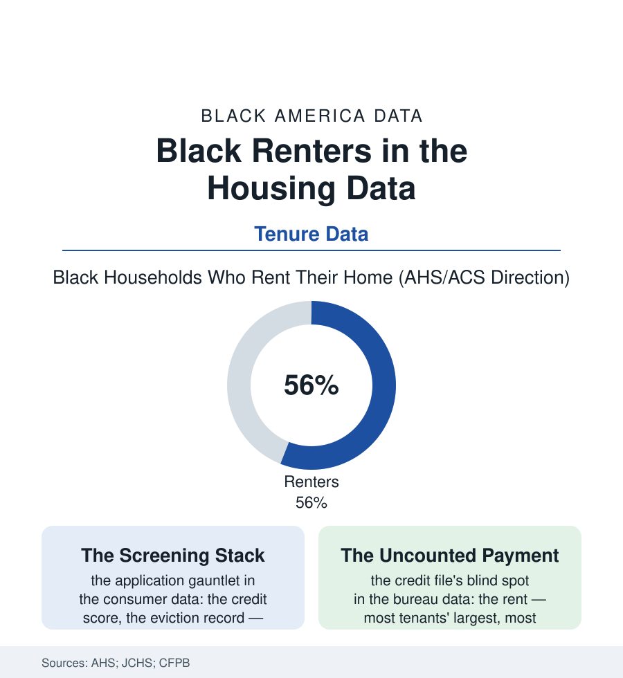

Black Census
The Tenant File: Black Renters in the Housing Data
Nearly six in ten Black households rent — the majority tenure of Black America — in a market whose screening, pricing, and paperwork shape daily life more than any mortgage table. The tenant file.

The homeownership file gets the atlas's attention, but the majority experience of Black housing is tenancy: nearly six in ten Black households rent, a share that has climbed across the decades of the housing data. The renter's market — its screens, its fees, its corporate consolidation — is therefore not a sidebar to the housing story. For most Black households, it is the housing story. This article reads the tenant file.
The Screening Stack
The tenancy begins before the lease, in the application economy the consumer data have only lately mapped: the per-application fees multiplied across the search (the renter of the eviction file's neighborhoods paying for rejection after rejection in the hot markets' data), the screening stack itself — the credit score's threshold, the eviction-record search that counts filings as judgments (the dismissed and the ancient weighed alike in the tenant-screening industry's standard product, the law's expungement and sealing reforms racing the databases' memory), the criminal-history screen's blanket forms against the housing guidance's case-by-case text, the source-of-income rows where the voucher's value is discounted at the leasing desk in the jurisdictions whose statutes permit it. Each screen is individually defensible in the landlord's risk arithmetic; their compound, in the mobility data, is a population sorted — the marginal file pushed toward the marginal stock, the fees extracting the search budget of the households least able to fund it, the addresses of the resulting tenancies mapping, tract by tract, onto the atlas's every other disadvantage layer with an accuracy no conspiracy could improve on. The tenancy's terms continue the arithmetic: the corporate consolidation of the rental stock (the single-family portfolios of the investor file, the algorithmic rent-setting of the recent antitrust record), the fee schedules of the modern lease — the amenity, the package, the pest, the month-to-month penalties itemized in the consumer bureaus' complaint data — and the maintenance ledger whose repair requests, in the code-enforcement data, sort by the same geography as everything else.
The insurance row of the tenancy deserves its line: renters' insurance — the cheapest policy in the consumer economy — is held by a minority of Black tenant households in the survey data, its absence converting the fire and the burst pipe from an inconvenience into an eviction-file origin story, the belongings' total loss absorbed by the kin network and the church's benevolence envelope. The industry's own marketing data have begun, belatedly, to price the discovery that the tenant file is a market and not a risk pool alone.
The Asset Hiding in the Rent Check
The file's forward data hold one genuinely reparative mechanism, small and compounding: the rent payment itself — for most tenant households the largest and most reliable obligation of their financial lives, paid on time at rates the delinquency data respect — entering the credit record at last, through the bureaus' rent-reporting programs and the housing authorities' pilots, the early evaluations crediting on-time reporters with score gains in the dozens of points, the subprime-to-prime border crossed by families whose only financial sin was paying their biggest bill in the one currency the scorers didn't read. Around it gather the tenancy's newer armors in the policy data: the right-to-counsel programs of the eviction file spreading city by city, the sealing statutes, the screening regulations' first ordinances (the look-back limits, the individualized-assessment mandates), the tenant unions' growth in the organizing data — a renter politics assembling, at last, at the scale of the renter population itself. The census will go on leading with the ownership rate, and this file does not begrudge it: the deed is the wealth file's foundation and the community's oldest ambition. But the tenant is the present tense of Black housing — fifty-six percent of the households, the whole of the young, the margin of the old — and the data of her daily negotiation with the screen, the fee, and the lease deserve the atlas's first-class citizenship they get, in the main, only here.
Reading the Tenant Data
The tenant file is the census section's majority report: the tenure of most of the people, treated by the headlines as the waiting room for the tenure of the rest. The housing surveys publish the shares. The application receipts — kept, in the searched-for apartment's file, at forty dollars a dignity — publish the price of admission to the majority's own market.
More in Black Census
The Black Population of the United States: Size, Definitions, and Distribution
The Black population of the United States totals 52.8 million — 15.4 percent of the nation. How the Census Bureau defines and counts the population, and where it lives.
Black Median Household Income in the United States
Black median household income stands at $56,490 in the Census Bureau's annual income report — how the figure is measured, how it compares, and what drives it.
The Black Poverty Rate: Levels, Children, and the Long Trend
The official Black poverty rate is 17.1 percent — against 11.1 percent nationally and 7.7 percent for non-Hispanic White Americans. How poverty is measured and what the data show.
Source: U.S. Census Bureau American Housing Survey and ACS; Joint Center for Housing Studies; National Consumer Law Center screening research; Consumer Financial Protection Bureau data.